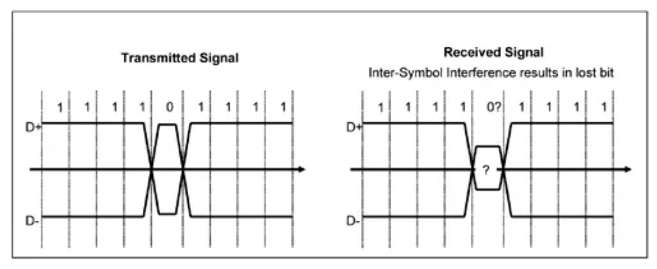
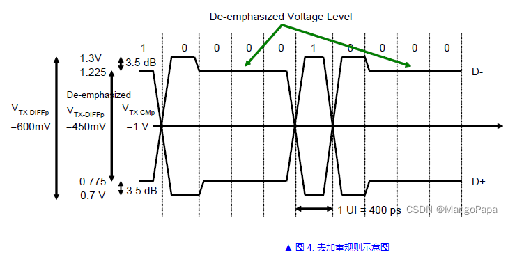
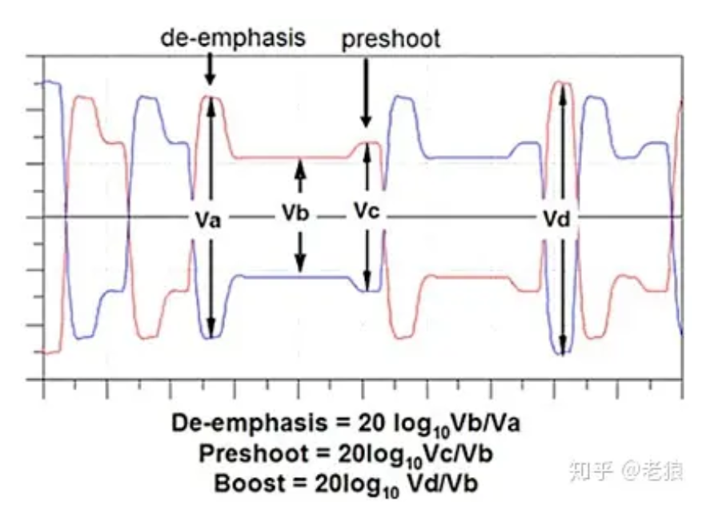
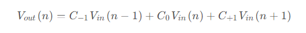
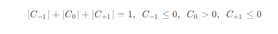
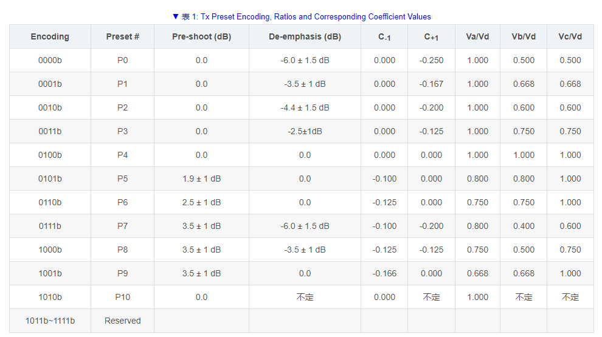
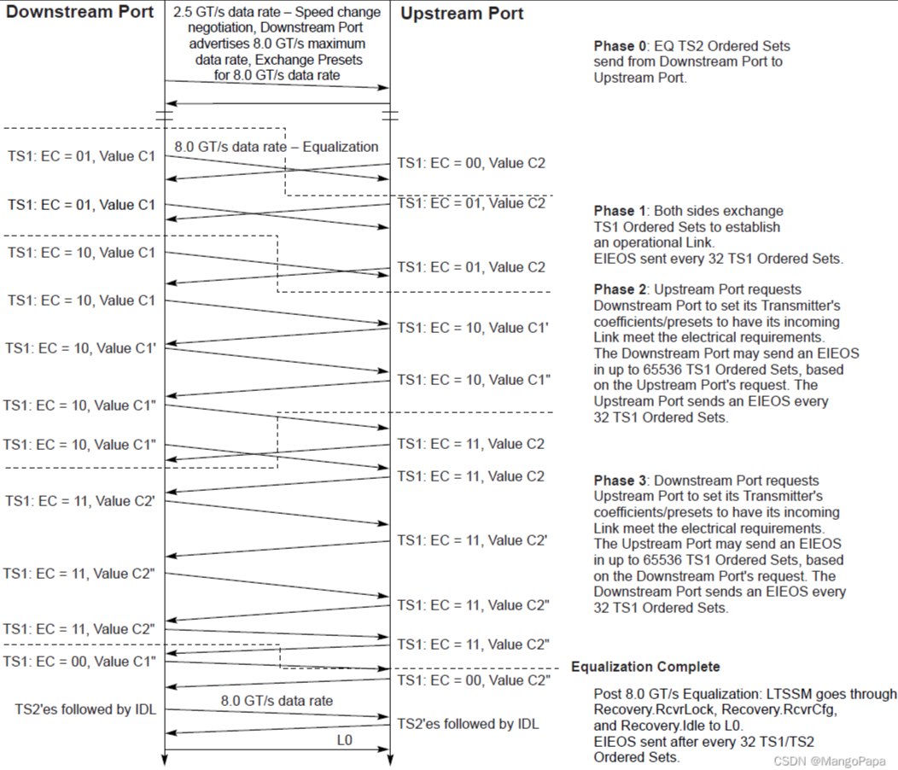

PCIe 均衡技术介绍
[toc]
Overview
为什么需要均衡？
由于传输速率（信号衰减和干扰）、电磁干扰、信道质量(劣质板材)等，信号完整性变得很差，现象就是眼图睁不开。
什么是均衡？
在发送端或者接收端上点手段，让质量好一些，就是均衡。
从频域角度去理解均衡技术
无源传输线路是一个低通滤波器，接收端是一个高通滤波器。
传输过程中，高频信号衰减厉害。
高频信号主要在上升沿和下降沿。
去加重（De-emphasis）和 Pre-shoot 是为了对抗码间干扰的。
发送端
发送端均衡采用前向反馈均衡器（Feed forward Equalizer，FFE），可分为预加重和去加重，两者方法类似。
去加重
什么是码间干扰呢？我们可以这么理解，当我们发送111101111这样的数据是，忽然变化的0，让电路里的电容很难迅速放电达到0，后面又被迅速拉到1，造成0的信号眼图很小：

而这种情况随着频率的提高越来越严重。从信号的角度来看，也就是信道对高频衰减大，而对低频衰减小。那怎么办呢？通过压低1的幅度来张开0的眼图：

- 信号发生跳变后，第一比特不做去加重。
- 若当前比特与前一比特相同，进行去加重。
预加重
而Preshoot是将跳变前一个增大幅度：本质上是增强高频分量。行业多采用De-emphasis方案。

三抽头FIR
8 GT/s 及以上速率时候，发送端采用一种三抽头的有限脉冲响应滤波器（Finite Impulse Response, FIR）作为发送信号均衡器。
三抽头 FIR 均衡器原理图如图 5 所示，该均衡器有三个输入，分别为当前发送比特、前一比特及后一比特，这三比特信号按照一定权重相加后作为输出。表示为：

其中，下一比特、当前比特及前一比特的权重系数 C-1、C0、C+1分别称为 FIR 方程的 Pre-cursor、Cusor 及 Post-cursor 系数。Pre-cursor 又称 Pre-shoot 系数，Post-cursor 又称去加重系数。收发端在均衡过程中调整这三个系数的值，来获得最佳传输性能。Pre-cursor、Cusor 及 Post-cursor 系数满足如下规则： 
通常，三个参数只需指定 Pre-cursor 及 Post-cursor ，Cursor 可以根据上式计算得出。

可见，三抽头是在de-emphasize和preshoot基础上发展而来的，本质上也是一样的。只是将前一步和后一步的情况，放到一起考虑，进行动态调整，之前的只是一个固定的值。
三抽头preset系数
方便交流，有一系列的预设系数。

接收端
对于信号质量，发送端努力了，但是经过长距离的传输，信号完整性可能还是很差。
还得上均衡器，接收端均衡器有一阶连续时间线性均衡器（Continuous-Time Linear Equalizaion, CTLE）和判决反馈均衡器（Decision Feedback Equalization，DFE）。
CTLE
前面提到过，传输线路是个低通滤波器，高频信号衰减厉害，低频衰减较小。因此这个均衡器就是个高通滤波器，削减低频信号，增加高频信号。缺点就是会增加高频噪声。
DFE
DFE 位于线性均衡器之后，将判决后的信号进行反馈，与接收信号按照一定权重累加后输出。
DFE 抽头数越多，对噪声抑制能力越强。
DFE 也是一种反馈均衡器，是用上次信道的输出经过判断后加权反馈到输入上。
不同速率的方案
2.5 GT/s 均衡
发送端去加重就可以，-3.5dB。如果信号本身就挺好，去加重可能适得其反，那就可以把去加重给关了。
5 GT/s 均衡
仍然可以采用-3.5dB去加重，建议增加到-6dB。当然也可以关了。
8 GT/s、16 GT/s、32 GT/s 均衡
gen1, gen2的均衡过程，没有交流沟通，直接采用预设的参数。
gen3以后，发送端要用FIR，接收端要用CTLE和DFE。
自动均衡与软件均衡
自动均衡机制是指在没有外部软件控制的情况下，PCIe 链路两端设备自主发起的均衡过程。
软件均衡机制是指 PCIe 设备在外部软件控制下发起的均衡过程。
协议不建议自动均衡与软件均衡混合使用的方式，比如 8 GT/s 及 16 GT/s 时采用自动均衡，到 32 GT/s 时又改用软件均衡，但协议中也未禁止这种操作。
链路训练进入 L0 状态后，如果 PCIe 设备知道 EQ 未完成、其接下来要进行 EQ，无论当前速率是多少（即便已经达到目标速率），双方都不能发送任何 DLLP。
软件均衡
-
软件将 Link Control 3 Register 的 Perform Equalization 位置一。
-
软件填写 Link Control 2 Register的 Target Link Speed 字段为 8 GT/s 或以上速率。
-
软件将 Link Control Register的 Retrain Link 位置一。
软件均衡机制不受 DLLP Blocking 机制的限制。
全均衡模式
Full equalization mode，全均衡模式， 是最传统的 PCIe 均衡模式。通常情况下，在指定目标速率的链路训练过程中，采用全均衡模式，先针对较低速率进行均衡，再进行较高速率的均衡，直到完成目标速率均衡。
一步一个脚印的training。
随着 PCIe 传输速率的上升，需要 EQ 的次数越来越多（单次约100 ms），EQ 耗时越来较久，影响了系统性能。为了节省均衡耗时，从 PCIe Gen5 开始，PCIe 支持跨过一些中间速率的均衡，对于原生传输质量极好的链路，也可以关闭均衡。
跳过某些均衡
链路训练过程中，双方设备在 LTSSM Configuration 状态通过交换 TS 来协商是否使用 Equalization bypass to highest rate。
通过32GT Capability Reg来控制。Equalization bypass to highest rate
如果协商后决定采用 Bypass equalization to highest rate 模式进行链路训练，只进行一次切速，即链路到达 2.5 GT/s L0 后，返回 Recovery 直接切速到最高速率并针对最高速率（32 GT/s 或以上）进行 1 次 EQ。
跳过均衡
如果双方支持 32 GT/s 及以上速率且支持 No equalization needed，在链路质量极好或本地存有之前均衡预设好的值的前提下，我们是有信心 5 GT/s 以上速率不用 EQ 的。不做 EQ能够大大节省 EQ 的时间，以最快速度建立连接。
Gen1 建立以后，直接拉到gen5，且不做均衡。
均衡结果
每完成一个 Phase，PCIe Controller 中都会把当前速率的状态（link status）寄存器中相应的 Equalization Phase Successful 置一。
并在完成 Phase 3 并退出均衡后将该速率的 Equalization Complete 位置一。
8GT 在link status
16和32GT 在16和32GT status
重新均衡
当发生几下几种情况时，可以重新进行 EQ：
- 针对某速率均衡失败；（速度上不去，重新EQ也不行，就降速）
- 针对某速率均衡成功，但在检查均衡系数设置时发现了问题；（想要的参数和实际得到的参数不一致，也可以重新EQ）
- 改变链路宽度
相关状态位
当某 Port 检测到 EQ 设置出现问题后，该 Port 需采取以下措施重新请求 EQ：
对于 8 GT/s，Link Status 2 Regiser 的 Link Equanlization Requset 8 GT/s 位置一。 对于 16 GT/s，16 GT/s Status Register 的 Link Equanlization Requset 16 GT/s 位置一。 对于 32 GT/s，32 GT/s Status Register 的 Link Equanlization Requset 32 GT/s 位置一。
EQ过程
- 双方都到达了gen1，双方协商进行速率切换，DSP说，咱么按照gen3来切，我给你发我的preset值；
- EQ Phase 0：EC=0。此时速率为 8 GT/s。USP 回传 Preset 及 Coefficients 给 DSP。 DSP 没有 Phase 0 。
- EQ Phase 1：EC=1。DSP 及 USP 发送其 LF (Low Frequency，symbol7)、FS (Full Swing，symbol8) 、Post-cursor (symbol9) 给对端 ，在 Phase 2/3 使用。每隔 32 TS1 发送一次 EIEOS。
- EQ Phase 2：EC=2。USP 作为 Master，调节 DSP 的 Tx Preset 及系数，确保 USP 输入链路满足 USP 的电气需求。具体可分为 Preset 调节及 coefficient 调节。USP 每隔 32 TS1 发送一次 EIEOS，DSP 根据 USP 请求在 65536 TS1 时间内至少发送一次 EIEOS。
- EQ Phase 3：EC=3。DSP 作为 Master，调节 USP 的 Tx Preset 及系数，确保 DSP 输入链路满足 DSP 的电气需求。具体可分为 Preset 调节及 coefficient 调节。DSP 每隔 32 TS1 发送一次 EIEOS，USP 根据 DSP 请求在 65536 TS1 时间内至少发送一次 EIEOS。
- EQ 完成后：EC=0。LTSSM 经 Recovery.RcvrLock -> Recovery.RcvrCfg -> Recovery.Idle -> L0。进 L0 前每隔 32 TS1/TS2 发送一次 EIEOS。

为什么PCIe EQ时为什么DSP直接进入phase1？
因为本质上，这就是两个人说话，调整音量，然后清晰地辨认出对方说了什么。
俩人说话，总有一个人先开口，先开口的人肯定知道自己说了啥，所以他可以不用phase0。
参考：
https://mangopapa.blog.csdn.net/article/details/124539607